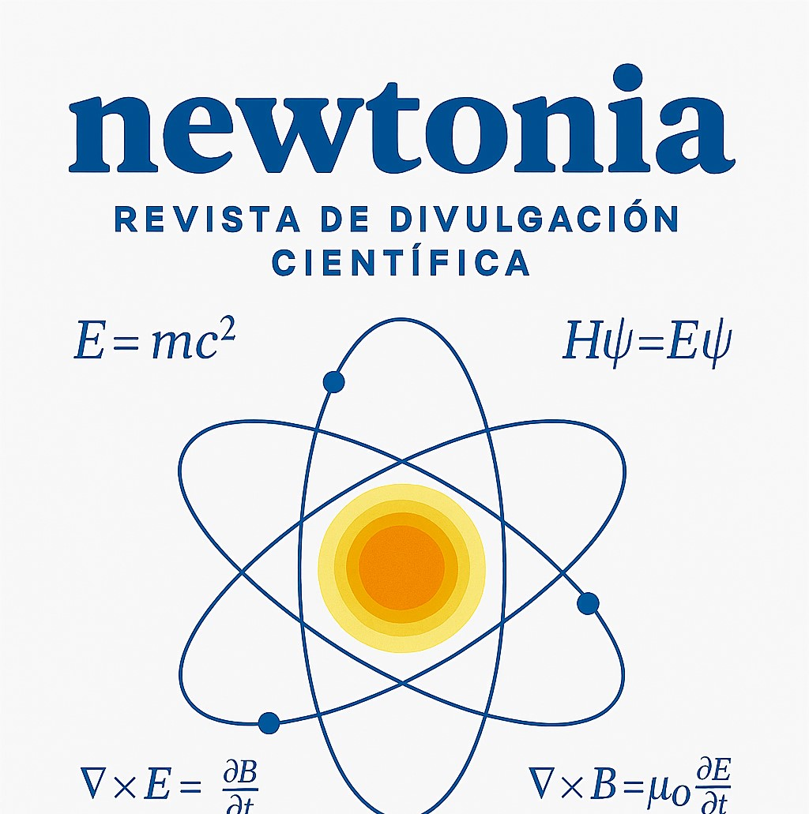
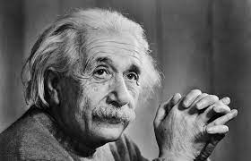
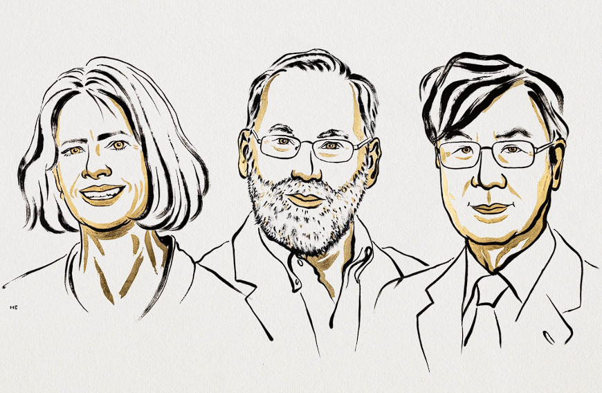
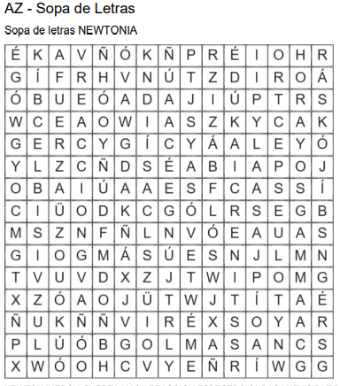

REVISTA DE DIVULGACIÓN CIENTÍFICA
NEWTONIA

Edición Mensual – Febrero 2025
CBTIS 142
Página 1
Información de la revista
Integrantes
- Velardes Herrera Angel Isaac (EDITOR, DISEÑADOR Y REDACTOR)
- Sánchez Gomez Pablo (REDACTOR)
- Ortigoza Arrieta Mario Angel (REDACTOR Y DISEÑADOR)
- Sanchez Martin Axel (REDACTOR Y DISEÑADOR)
Docentes:
Liliana Quintana Zaragoza
William Rivera Reyes
Luís Hernández Herrera
Asignaturas:
La Energía en los Procesos de la Vida Diaria
Construye Aplicaciones web
Inglés V
Grupo: 5° "A" Especialidad: PROGRAMACIÓN
Página 2
Índice
📖 Pág. 4: Artículo 1 – Leyes de Newton
📖 Pág. 5: Artículo 2 – Espectro Electromagnético
📖 Pág. 6: Artículo 3 – Quantum Physics
📖 Pág. 7: Sabías que...
📖 Pág. 8: Biografías
📖 Pág. 9: Premio Nobel 2025
📖 Pág. 10: Entrevista (Español)
📖 Pág. 11: Interview in English
📖 Pág. 12: Festival Académico DGETI 2025
📖 Pág. 13: Juego Científico
📖 Pág. 14: Anuncio Philips Hue
Página 3
Leyes de Newton
¿QUÉ SON?
Las Leyes de Newton son tres principios fundamentales que explican
como se mueven los objetos. Describen la relación entre la fuerza,
el movimiento y la inercia, y son la base de toda la mecánica clasica.
Gracias a estas leyes podemos entender por qué los objetos aceleran, frenan,
cambian de dirección o permanecen en reposo. Fueron formuladas por Isaac Newton en el siglo XVII
y aún hoy se utilizan en fisica, ingeniería y prácticamente cualquier área donde haya movimiento.
Primera ley de Newton (Ley de la inercia)
Postula que un cuerpo en reposo permanecerá en reposo,
y un cuerpo en movimiento continuará en movimiento con
una velocidad constante (es decir, con la misma rapidez
y en la misma dirección) en línea recta, a menos que una
fuerza externa neta actúe sobre él.
EJEMPLO
Cuando una bicicleta en movimiento continúa su trayectoria
por un tiempo, incluso después de que se ha dejado de pedalear.
Este es un ejemplo clásico de la primera ley de Newton: los objetos
en movimiento tienden a seguir moviéndose a menos que una fuerza externa
(en este caso, los frenos) actúe sobre ellos.
Segunda ley de Newton (Ley de la fuerza y aceleracion)
La segunda ley de Newton establece una relación cuantitativa
entre la fuerza, la masa y la aceleración de un objeto. Declara
que la aceleración de un objeto es directamente proporcional a
la fuerza neta aplicada sobre él e inversamente proporcional a
su masa. Esto se expresa matemáticamente con la ecuación:
F=m⋅a
Donde F representa la fuerza neta (medida en Newtons), m es la
masa del objeto (medida en kilogramos, kg) y a es la aceleración
resultante (medida en metros por segundo al cuadrado, m/s²).
EJEMPLO
Imagina dos carritos de juguete, uno más pesado que el otro. Si se empujan
ambos con la misma fuerza, el carrito más ligero acelerará más rápido que el
más pesado. Esto se debe a la segunda ley de Newton: la aceleración es inversamente
proporcional a la masa. Cuanto mayor es la masa de un objeto, menor será su aceleración
para una misma fuerza aplicada.
Tercera ley de newton (Ley de accion y reaccion)
A menudo citada como la ley de acción y reacción (incluso fuera
del campo de la física), afirma que por cada acción, siempre hay
una reacción de igual magnitud y en dirección opuesta. Esto significa
que las fuerzas siempre ocurren en pares, es decir, cuando un objeto
ejerce una fuerza sobre un segundo objeto (la acción), el segundo objeto
simultáneamente ejerce una fuerza de igual magnitud pero en sentido contrario
sobre el primer objeto (la reacción).
Es importante destacar que estas fuerzas actúan sobre objetos diferentes y, por
lo tanto, no se anulan mutuamente. Ejemplos claros de esta ley abundan en el
mundo: cuando un nadador empuja el agua hacia atrás (acción), el agua lo impulsa
hacia adelante (reacción); cuando un cohete despega expulsando gases a alta velocidad
hacia abajo (acción), los gases a su vez empujan el cohete hacia arriba (reacción); o
incluso al caminar, se “empuja” el suelo hacia atrás, y el suelo impulsa hacia adelante.
EJEMPLO
Al caminar por la playa, con cada paso, los pies ejercen una fuerza hacia adelante, a la
vez que empujan la arena hacia atrás. En este caso, la acción de empujar hacia abajo la
arena provoca una reacción en la que los pies dejan huella en la superficie.
Autor: Ortigoza Arrieta Mario Angel
Página 4
Especto Electromagnetico
¿QUE ES?
La energía electromagnética viaja en ondas y abarca un amplio espectro, desde ondas de radio
muy largas hasta rayos gamma muy cortos. El ojo humano sólo puede detectar una pequeña porción
de este espectro llamada luz visible. Una radio detecta una porción diferente del espectro y una
máquina de rayos X utiliza otra porción más.
Regiones
Rayos Gamma:
Con una longitud de onda menor a 10-11 metros (m) y una frecuencia mayor a 1019.Rayos x
Radiacion ultravioleta extrema
Con una longitud de onda menor a 10-8 m y una frecuencia mayor a 1,5×1015.Radiacion ultravioleta cercana
Con una longitud de onda menor a 380×10-9 m y una frecuencia mayor a 7,89×1014.Radiacion visible de la luz
Con una longitud de onda menor a 780×10-9 m y una frecuencia mayor a 384×1012.Infrarrojo cercano
Con una longitud de onda menor a 2,5×10-6 m y una frecuencia mayor a 120×1012.Infrarrojo medio
Con una longitud de onda menor a 50×10-6 m y una frecuencia mayor a 6×1012.Infrarrojo lejano o submilimetrico
Con una longitud de onda menor a 350×10-6 m y una frecuencia mayor a 300×109.Radiacion de microondas
Con una longitud de onda menor a 10-2 m y una frecuencia mayor a 3×108.Ondas de radio de ultra alta frecuencia
Con una longitud de onda menor a 1 m y una frecuencia mayor a 300×106.Ondas de radio de muy alta frecuencia
Con una longitud de onda menor a 100 m, una frecuencia mayor a 30×106Hz.Onda corta de radio
Con una longitud de onda menor a 180 m y una frecuencia mayor a 1,7×106.Onda media de radio
Con una longitud de onda menor a 650 m y una frecuencia mayor a 650×103Hz .Onda larga de radio
Con una longitud de onda menor a 104 m y una frecuencia mayor a 30×103.Onda de radio de muy baja frecuencia
Con una longitud de onda mayor a 104 m, una frecuencia menor a 30×103 Hz.
Usos
Las ondas de frecuencia de radio
Los microondas
La radiacion ultravioleta
La radiacion Infrarroja
El espectro de luz visible
Los rayos x
Importancia
En el mundo contemporáneo, el espectro electromagnético es un elemento clave para las telecomunicaciones
y la transmisión de información. También es imprescindible en técnicas exploratorias (tipo radar/sonar) del
espacio exterior como una forma de comprender fenómenos astronómicos distantes en el tiempo y el espacio.
Tiene diversas aplicaciones médicas y prácticas que son, además, parte de lo que hoy tomamos como calidad de
vida. Por eso su manipulación es, sin duda, unos de los grandes descubrimientos de la humanidad.
Autor: Ortigoza Arrieta Mario Angel
Página 5
Quantum Physics
A short and direct summary of basic ideas, history, and applications.
Introduction
Quantum physics is the theory that describes how matter and energy behave on very small scales, like atoms and particles. It replaces or complements classical physics when things are so small that random and discrete effects become important. Because of these special behaviors, we need a different theory that can explain things that classical physics cannot describe.
Development
Historical origin
The theory started in 1900, when Max Planck said that energy is exchanged in small packets called quanta. In 1905, Albert Einstein used this idea to explain the photoelectric effect by introducing the concept of the photon. Later, between 1925 and 1927, the theory became more complete thanks to Heisenberg, Schrödinger, and Dirac, who created its modern mathematical form.
Basic principles
Wave-particle duality: Quantum objects can act like waves or like particles, depending on the experiment.
Superposition: A quantum system can be in many possible states at the same time, until a measurement forces it into one final state.
Uncertainty principle: According to Heisenberg, we cannot know exactly and at the same time some values, like position and momentum. This is a natural limit, not a technology problem.
Entanglement: Particles that interacted can stay connected, so measuring one gives information about the other instantly, even if they are far apart.
Mathematical description
The state of a quantum system is represented by a wave function , or state vector. Its change over time is described by Schrödinger’s equation. Measured quantities are represented with operators, and their possible values are the eigenvalues. The probability of getting a value is calculated from the state of the system.
Main experiments
Double-slit experiment: Single particles create an interference pattern like waves, showing superposition and wave-particle duality.
Bell tests: These experiments show that quantum correlations cannot be explained by local and deterministic theories, confirming entanglement.
Technological applications
Quantum physics made possible the invention of lasers, semiconductors, and magnetic resonance. Today, it also drives new technologies like quantum computers, quantum cryptography, and very precise quantum sensors.
Conceptual implications
Quantum theory changes the idea of determinism, because it replaces exact results with probabilities. It also brings open questions about its interpretation (Copenhagen, many worlds, collapse theories, etc.), which try to explain the physical meaning of the wave function and measurement.
Conclusion
Quantum physics is a strong and well-tested explanation of the microscopic world. Its predictions are very accurate, and its applications are part of modern life. At the same time, it leaves deep conceptual questions that continue to inspire scientific research and philosophy.
Autor: Sanchez Gomez Pablo
Página 6
¡Sabías que!
¿Sabías que: casi todo lo que existe en la materia, edificios, seres vivos, tú
mismo está formado en su mayoría por espacio vacío?
La materia, como la conocemos (átomos, moléculas, cuerpos sólidos, líquidos, gases, seres vivos) está constituida
en su interior por partículas diminutas: núcleos atómicos y electrones. Pero entre esas partículas hay espacio vacío.
Es decir: los átomos no están densamente empaquetados, sino que tienen mucho hueco entre sus componentes internos.
Si imagináramos que quitáramos todo ese espacio vacio de cada átomo de una persona o de un objeto cualquiera la
materia se condensaría de forma increíble: la densidad sería inimaginable. Por eso se dice que, en un sentido, lo que
nos parece sólido en realidad está conformado en gran medida por vacíos.
Este hecho nos recuerda lo asombroso de la escala atómica y cuántica: objetos concretos, palpables, con volumen y
forma, dependen de interacciones entre partículas tan diminutas que apenas podemos imaginar y entre ellas, hay
espacios vacíos, pero ese vacío es tan esencial como la materia misma.

¿Sabías que, la luz que vemos del Sol viaja casi 150 millones de kilómetros y
tarda más de 8 minutos en llegar a nosotros?
La luz viaja a la increíble velocidad de 299,792,458 metros por segundo en el vacío eso es lo más rápido que se
conoce en el universo, como la distancia entre el Sol y la Tierra es de unos 149,6 millones de kilómetros, la luz
tarda alrededor de 8 minutos y 17 segundos en recorrerla.
Esto significa que cuando miras al Sol, no lo estás viendo “en tiempo real”, sino como era hace más de 8 minutos.
Todo lo que el Sol ha hecho durante ese breve lapso —erupciones, cambios en su superficie, emisiones de radiación
lo verás con un pequeño retraso.
Ese retraso no es exclusivo del Sol. Cada estrella, galaxia o remanente estelar que vemos en el cielo nos muestra
el pasado. Si una estrella está a 1000 años luz de distancia, vemos su luz como era hace 1000 años. De ese modo,
la astronomía funciona como una especie de máquina del tiempo cósmica, permitiéndonos estudiar la historia del
universo.

Autor: Sanchez Martin Axel
Página 7
Biografías
Biografia Isaac Newton
Nació el 25 de diciembre de 1642, en Woolsthorpe, Lincolnshire, Inglaterra,
es el más grande de los astrónomos ingleses; se destacó también como gran físico
y matemático. Fue en realidad un genio al cual debemos el descubrimiento de la
ley de gravitación universal, que es una de las piedras angulares de la ciencia
moderna. Fue uno de los inventores del cálculo diferencial e integral. Estableció
las leyes de la mecánica clásica, y partiendo de la ley de gravitación universal
dedujo las leyes de Kepler en forma más general. Logró construir el primer telescopio
de reflexión.
Su padre,murió de neumonía unos meses antes de su nacimiento, y su madre luchó por sacar
adelante la granja de la familia en Woolsthorpe. Eran tiempos difíciles en el país, una
sangrienta guerra civil trastornó a Inglaterra durante seis años. Cuando Isaac tenía tres
años su madre volvió a casarse, dejando a su hijo al cuidado de sus abuelos. Su primera
educación la recibió en las escuelas de los pueblos cercanos. A los doce años fue inscrito
en la escuela primaria de Grantham, una ciudad a diez kilómetros de su hogar. Allí estudió
latín y la Biblia, pero tuvo poco contacto con las matemáticas o las ciencias. El joven Newton
vivía en la casa de William Clarke, farmacéutico de la ciudad, que tenía una de las mejores
bibliotecas del lugar y una hermosa hijastra, con la que más tarde Newton tuvo un romance
adolescente, el primero y último de su vida.
Cautivado por el principio de los relojes de sol, aprendió a calcular no sólo la hora sino
también el día del mes, y a predecir acontecimientos como los solsticios y los equinoccios.
Incluso el viento lo fascinaba. Un día, cuando Newton tenía dieciséis años, se alzó una gran
tormenta, mientras la gente prudente buscaba refugio del viento, el joven realizó lo que más
tarde recordaría como su primer experimento científico. Primero saltó con el viento, luego
contra él. Comparando las distancias de los dos saltos, fue capaz de estimar la fuerza del
ventarrón.
En Cambridge, Newton llenó su soledad con el estudio de una amplia variedad de temas, que
iban desde la astrología hasta la historia. Al final de su etapa de no graduado en 1664,
había descubierto también las matemáticas y la filosofía natural, un campo que abarcaba los
temas hoy conocidos como ciencias físicas. Newton se estaba preparando para empezar el
trabajo de posgraduado cuando su vida dio otro brusco giro. Inglaterra fue golpeada por la
peste bubónica, que se llevó consigo miles de vidas, sobre todo en ciudades como Londres y
Cambridge, cuyos sucios y atestados arrabales proporcionaban un caldo de cultivo ideal para la
enfermedad transmitida por las ratas. La universidad cerró temporalmente mientras sus
estudiantes huían a regiones rurales menos afectadas. Newton regresó a Woolsthorpe, visitando
Cambridge de tanto en tanto para usar su biblioteca. Tranquilo al calor de Lincolnshire,
puso a trabajar su poderoso intelecto en diversos problemas científicos y matemáticos.
Construyó la primera versión funcional de un nuevo instrumento astronómico, el telescopio de
reflexión, que usaba un espejo curvo en vez de lentes para enfocar la luz. Desarrolló una
nueva y poderosa rama de las matemáticas llamada cálculo. Y efectuó el trabajo fundamental
de su teoría de la gravitación.
El relato popular del origen de esa teoría -que Newton la concibió en el verano de 1666 tras
ver caer una manzana de un árbol- es imposible de confirmar, pero la tradición ha señalado un
árbol de la granja familiar como aquel del que cayó la manzana. Cuando el árbol murió en 1820,
fue cortado a trozos, que fueron cuidadosamente conservados. En cualquier caso, algo durante
este período dirigió los pensamientos de Newton hacia la idea de la ley universal de la
gravitación. Su gran tratado Principios Matemáticos de Filosofía Natural (Principia), publicado
en 1687 presenta los estudios de Newton durante más de veinte años en relación a la mecánica
terrestre y celeste. Allí enuncia la ley de gravitación: dos cuerpos se atraen con una fuerza
proporcional a sus masas e inversamente proporciona al cuadrado de la distancia que las separa.
La importancia filosófica de la obra de Newton es extraordinaria; la forma en que el ser humano
enfrentó la naturaleza el siglo XVIII y XIX es una consecuencia de los descubrimientos del gran
sabio inglés. Los méritos de Newton no se reducen al campo de la mecánica y las matemáticas;
también la óptica supo de su talento. Descubrió que la luz blanca puede ser descompuesta en
todos los colores del arcoiris al hacerla pasar por un prisma, iniciando con ello el análisis
espectral, base de la astrofísica contemporánea. Sus estudios sobre la luz lo llevaron a
publicar en 1704 su Tratado sobre Óptica, donde además detalla su teoría corpuscular para la
naturaleza de la luz.
Los últimos años de su vida los destino a profundas meditaciones teológicas, alejado casi
totalmente de aquellos quehaceres intelectuales para los cuales no tuvo rival. Murió el 20 de
marzo de 1727, en Cambridge, Cambridgeshire, Inglaterra.

Autor: Ortigoza Arrieta Mario Angel
Albert Einstein
Albert Einstein nació en Ulm, Wurtemberg, Alemania, el 14 de marzo de 1879.
Seis semanas después, su familia se mudó a Múnich, donde posteriormente
comenzó sus estudios en el Luitpold Gymnasium. Posteriormente, se mudaron
a Italia y Albert continuó su educación en Aarau, Suiza. En 1896 ingresó en
la Escuela Politécnica Federal Suiza de Zúrich para formarse como profesor
de física y matemáticas. En 1901, año en que obtuvo su diploma, adquirió la
ciudadanía suiza y, al no encontrar un puesto docente, aceptó un puesto como
asistente técnico en la Oficina Suiza de Patentes. En 1905 obtuvo su doctorado.
Durante su estancia en la Oficina de Patentes, y en su tiempo libre, produjo
gran parte de su notable obra y en 1908 fue nombrado Privatdozent en Berna.
En 1909 se convirtió en Profesor Extraordinario en Zúrich, en 1911 Profesor
de Física Teórica en Praga, regresando a Zúrich al año siguiente para ocupar
un puesto similar. En 1914 fue nombrado Director del Instituto de Física
Kaiser Wilhelm y Profesor en la Universidad de Berlín. Se nacionalizó alemán
en 1914 y permaneció en Berlín hasta 1933, cuando renunció a su ciudadanía
por razones políticas y emigró a Estados Unidos para ocupar el puesto de
Profesor de Física Teórica en Princeton. Se nacionalizó estadounidense en 1940
y se jubiló de su puesto en 1945.
Después de la Segunda Guerra Mundial, Einstein fue una figura destacada del
Movimiento de Gobierno Mundial, le ofrecieron la presidencia del Estado de Israel,
que rechazó, y colaboró con el Dr. Chaim Weizmann en el establecimiento de la
Universidad Hebrea de Jerusalén.
Einstein siempre pareció tener una visión clara de los problemas de la física
y la determinación de resolverlos. Tenía una estrategia propia y era capaz de
visualizar las principales etapas del camino hacia su objetivo. Consideraba sus
principales logros como simples peldaños para el siguiente avance.
Al comienzo de su trabajo científico, Einstein se percató de las deficiencias
de la mecánica newtoniana, y su teoría especial de la relatividad surgió de un
intento de reconciliar las leyes de la mecánica con las del campo electromagnético.
Abordó problemas clásicos de la mecánica estadística y problemas en los que se
fusionaban con la teoría cuántica, lo que condujo a una explicación del movimiento
browniano de las moléculas. Investigó las propiedades térmicas de la luz con baja
densidad de radiación y sus observaciones sentaron las bases de la teoría fotónica
de la luz.
En sus primeros días en Berlín, Einstein postuló que la interpretación correcta de
la teoría especial de la relatividad también debía proporcionar una teoría de la
gravitación, y en 1916 publicó su artículo sobre la teoría general de la relatividad.
Durante este periodo también contribuyó a los problemas de la teoría de la radiación
y la mecánica estadística.
En la década de 1920, Einstein se embarcó en la construcción de teorías de campos
unificados, aunque continuó trabajando en la interpretación probabilística de la
teoría cuántica, trabajo que perseveró en Estados Unidos. Contribuyó a la mecánica
estadística con el desarrollo de la teoría cuántica de un gas monoatómico y también
realizó una valiosa labor en relación con las probabilidades de transición atómica
y la cosmología relativista.
Tras su jubilación continuó trabajando en la unificación de los conceptos básicos
de la física, adoptando el enfoque opuesto, la geometrización, al de la mayoría
de los físicos.
Las investigaciones de Einstein están bien documentadas, y entre sus obras más
importantes se encuentran: Teoría Especial de la Relatividad (1905),
Relatividad (1920 y 1950), Teoría General de la Relatividad (1916),
Investigaciones sobre la Teoría del Movimiento Browniano (1926) y
La Evolución de la Física (1938). Entre sus obras no científicas destacan
Sobre el sionismo (1930), ¿Por qué la guerra? (1933),
Mi filosofía (1934) y De mis últimos años (1950).
Albert Einstein recibió doctorados honoris causa en ciencias, medicina y filosofía
de numerosas universidades. Durante la década de 1920 impartió conferencias en
Europa, América y el Lejano Oriente, y fue galardonado con becas y membresías de
las principales academias científicas del mundo. Recibió premios como la Medalla
Copley de la Royal Society de Londres (1925) y la Medalla Franklin del Instituto
Franklin (1935).
Para su esparcimiento, la música desempeñó un papel importante en su vida. Se casó
con Mileva Maric en 1903 y tuvieron una hija y dos hijos; su matrimonio se disolvió
en 1919 y ese mismo año se casó con su prima Elsa Löwenthal, quien falleció en 1936.
Einstein murió el 18 de abril de 1955 en Princeton, Nueva Jersey.

Autor: Sánchez Gomez Pablo
Nikola Tesla
Early Life
Nikola Tesla was born in 1856 in the village of Smiljan, which is today part of Croatia.
His family was not rich, but they were very educated. His mother had a kind of
"natural inventor's mind," she made tools and household gadgets by herself, and Tesla
always said that he got his imagination from her. As a kid he had weird dreams, flashes
of light in his head, and could imagine machines very detailed, almost like they were
in front of him.
Education and Early Work
When Tesla grew up he went to study engineering in Graz and later worked in
telegraphy. Even in his early years he didn’t really like direct current (DC), which was
the main system used at that time. He thought it was too weak, too lossy, too limited.
Tesla had the idea that electricity should travel farther with less losing energy. That
idea was the start of his big dream: the alternating current system (AC).
Move to the United States
In the 1880s Tesla moved to the United States with only a letter, some coins, and the
idea that he could change the world. He worked briefly with Thomas Edison, but the two
men didn’t get along. Edison preferred DC and didnt believe in AC, and Tesla thought
Edison’s methods were old-fashioned. They had many arguments, and finally Tesla left to
create his own research labs.
The AC Revolution
Tesla later met George Westinghouse, a businessman who believed in his ideas. With
Westinghouse’s help, Tesla designed AC generators, transformers, and motors that could
power entire cities. One of the greatest victories of his career was the contract to
power the 1893 Chicago World's Fair. When the lights turned on, all with Tesla’s AC
system, the crowd was in shock. It was the moment when AC became the future of
electricity.
Inventions and Experiments
Tesla also worked on unbelievable projects. He began experimenting with wireless
energy, radio waves, high voltage coils, and remote control. He made a small boat moved
by radio in 1898; people at the demonstration thought it was magic or some kind of trick.
Tesla always dreamed about sending energy through the air, without wires at all. The
Wardenclyffe Tower was part of that dream, but it was never finished because money ran
out and investors didnt understand his ideas.
Personal Struggles
During his life, Tesla had many difficulties. He was a genius but not good in business,
so he was often broke. He also had weird habits, like obsession with the number 3,
avoiding touching human hair, and a fear of germs. But even people who thought he was
strange respected his mind.
Lastest Years and Death
In his later years Tesla lived in hotels, still thinking of new inventions, still
writing ideas on paper, still dreaming of a future full of wireless energy and machines
that could think. He died in 1943, almost forgotten by the public, but today he is
considered one of the greatest inventors ever.
Legacy
His work on alternating current made it possible to build the modern electric grid.
Without Tesla’s systems, we wouldn’t have long-distance power transmission, electric
motors in factories, and many machines we use everyday. Even new technologies like
wireless charging and radio communications owe a lot to him. Tesla’s ideas were so
ahead that some are only now being studied seriously.

Autor: Velardes Herrera Angel Isaac
Página 8
Premios Nobel 2025
Premio Nobel de Química 2025
La Real Academia Sueca de Ciencias otorgó el Premio Nobel de Química 2025 a Susumu Kitagawa de la Universidad de Kioto,
Richard Robson de la Universidad de Melbourne y Omar Yaghi de la Universidad de California por el desarrollo de estructuras
metalorgánicas.
Los galardonados desarrollaron una nueva forma de arquitectura molecular. En sus estructuras, los iones metálicos funcionan
como pilares unidos por largas moléculas orgánicas (carbonadas). Juntos, los iones y moléculas metálicas se organizan para
formar cristales con grandes cavidades. Estos materiales porosos se denominan estructuras metalorgánicas (MOF, por sus siglas
en inglés). Al variar los componentes básicos de las MOF, los químicos pueden diseñarlas para capturar y almacenar sustancias
específicas. Las MOF también pueden impulsar reacciones químicas o conducir electricidad.
Todo comenzó en 1989, cuando Richard Robson experimentó con el uso de las propiedades inherentes de los átomos de una
forma novedosa. Combinó iones de cobre con carga positiva con una molécula de cuatro brazos; esta tenía un grupo químico que
era atraído por los iones de cobre en el extremo de cada brazo.
Al combinarse, se unieron para formar un cristal amplio y ordenado. Era como un diamante lleno de innumerables cavidades.

Richard Robson se inspiró en la estructura del diamante, donde cada átomo de carbono estáunido a otros cuatro en forma de
pirámide. En lugar de carbono, utilizó iones de cobre y una molécula con cuatro brazos, cada uno con un nitrilo en el extremo.
Este es uncompuesto químico que atrae a los iones de cobre. Al combinarse, las sustancias formaron un cristal ordenado y muy
espacioso. Imágenes: Johan Jarnestad/Real Academia Sueca de Ciencias.
Robson reconoció de inmediato el potencial de su construcción molecular, pero era inestable y colapsaba con facilidad. Sin
embargo, Susumu Kitagawa y Omar Yaghi sentaron bases sólidas para este método de construcción; entre 1992 y 2003, realizaron,
por separado, una serie de descubrimientos revolucionarios. Kitagawa demostró que los gases pueden fluir dentro y fuera de las
construcciones y predijo que los MOF podrían hacerse flexibles. Yaghi creó un MOF muy estable y demostró que puede modificarse
mediante un diseño racional, dotándolo de propiedades nuevas y deseables.
Tras los revolucionarios descubrimientos de los galardonados, los químicos han construido decenas de miles de MOF diferentes.
Algunos de ellos podrían contribuir a resolver algunos de los mayores desafíos de la humanidad, con aplicaciones que incluyen
la separación de PFAS del agua, la descomposición de trazas de fármacos en el medio ambiente, la captura de dióxido de carbono
o la recolección de agua del aire del desierto.
 Ir al sitio
Ir al sitio
Premio Nobel de Física 2025.
La Real Academia Sueca de Ciencias ha decidido otorgar el Premio Nobel de Física 2025 a John Clarke, Michel H. Devoret y
JohnM. Martinis, los tres de la Universidad de California en Estados Unidos de América, por el descubrimiento del efecto
túnelmecánico cuántico macroscópico y la cuantización de la energía en un circuito eléctrico.
La mecánica cuántica permite que una partícula atraviese una barrera mediante un proceso llamado tunelización. En cuanto
intervienen grandes cantidades de partículas, los efectos de la mecánica cuántica suelen volverse insignificantes. Los
experimentos de los galardonados demostraron que las propiedades de la mecánica cuántica pueden concretarse a escala
macroscópica.
En 1984 y 1985, Clarke, Devoret y Martinis realizaron una serie de experimentos con un circuito electrónico construido
con superconductores, componentes capaces de conducir corriente sin resistencia eléctrica. En el circuito, los componentes
superconductores estaban separados por una fina capa de material no conductor, una configuración conocida como unión Josephson.
Al refinar y medir las diversas propiedades de su circuito, pudieron controlar y explorar los fenómenos que surgían al pasar
una corriente a través de él. En conjunto, las partículas cargadas que se movían a través del superconductor formaban un sistema
que se comportaba como si fueran una sola partícula que llenaba todo el circuito.
Este sistema macroscópico, similar a una partícula, se encuentra inicialmente en un estado en el que la corriente fluye sin
voltaje. El sistema está atrapado en este estado, como tras una barrera infranqueable. En el experimento, el sistema demuestra
su carácter cuántico al lograr escapar del estado de voltaje cero mediante un efecto túnel. El cambio de estado del sistema se
detecta mediante la aparición de un voltaje.
Los galardonados también pudieron demostrar que el sistema se comporta tal como lo predice la mecánica cuántica: está cuantizado,
lo que significa que sólo absorbe o emite cantidades específicas de energía.
Los transistores de los microchips informáticos son un ejemplo de la tecnología cuántica consolidada que nos rodea. Estos
descubrimientos han brindado oportunidades para desarrollar la próxima generación de tecnología cuántica, incluyendo la
criptografía cuántica, las computadoras cuánticas y los sensores cuánticos.
 Ir al sitio
Ir al sitio
Premio Nobel de Medicina 2025.
El Premio Nobel de Fisiología o Medicina 2025 fue otorgado a Mary E. Brunkow, Fred Ramsdell y Shimon Sakaguchi por descubrir
cómo las células T reguladoras (Treg) evitan que el sistema inmunitario ataque al propio organismo. Este hallazgo permitió
entender un mecanismo esencial llamado tolerancia inmunitaria periférica, que complementa a la tolerancia central del timo
donde normalmente se eliminan las células T que podrían reaccionar contra tejidos propios. Como este primer mecanismo no es
perfecto, algunos linfocitos autorreactivos escapan, y es aquí donde las células T reguladoras cumplen un papel clave para
mantener el equilibrio inmunitario.
En 1995, Shimon Sakaguchi identificó un tipo especial de células T CD4+ que expresan CD25 y que, al faltar, desencadenan enfermedades
autoinmunes. Estas células, denominadas Treg, demostraron que existe un mecanismo activo fuera del timo que controla la autoinmunidad.
Mientras tanto, Mary E. Brunkow y Fred Ramsdell descubrieron que una mutación en el gen Foxp3 era la causa de una enfermedad autoinmune
letal en ratones scurfy. Posteriormente confirmaron que mutaciones en el gen humano FOXP3 provocaban el síndrome IPEX, una grave enfermedad
autoinmune infantil.
Sakaguchi completó el panorama al demostrar que FOXP3 es esencial para el desarrollo y función de las células T reguladoras y que
incluso es suficiente para convertir una célula T convencional en una Treg. Estos descubrimientos revolucionaron la inmunología al
revelar un nuevo tipo celular y su mecanismo genético regulador, explicando por qué la mayoría de las personas no desarrolla autoinmunidad
severa.
Los avances de los tres científicos han abierto nuevas vías terapéuticas. Actualmente existen más de 200 ensayos clínicos que buscan modular
las células T reguladoras para tratar enfermedades autoinmunes, prevenir el rechazo de trasplantes o incluso, en el campo del cáncer, inhibir
a las Treg que pueden proteger a los tumores del ataque inmunitario. Sus aportes han sido fundamentales para comprender el equilibrio del sistema
inmunitario y desarrollar tratamientos innovadores.

Ir al sitio
Autor: Sánchez Martin Axel
Página 9
Entrevista en Español
Entrevistado: Ingeniero en Ingeniería Industrial y Licenciado en Contabilidad – Miguel Ángel Reyes Rodríguez
¿Qué lo motivó a seguir adelante?
Su principal motivación fue superarse a sí mismo, demostrarse que era capaz de lograr lo que
realmente le apasionaba y desarrollar sus habilidades profesionales.
¿Cuál fue su mayor reto?
Su mayor reto fue concluir su ingeniería, con el objetivo de asegurar un futuro estable y contar
con las herramientas necesarias para brindar bienestar a su familia.
¿Qué recomienda a los estudiantes?
Recomienda a los jóvenes que nunca se rindan. Aun cuando la carrera parezca difícil o estresante,
es importante esforzarse, ser constantes y mantener la disciplina. Considera que se llama “carrera”,
precisamente porque implica seguir adelante, luchar y persistir para superarse.
¿Cuáles considera que han sido los científicos más importantes de la historia?
Para él, los científicos más relevantes han sido Isaac Newton y Leonardo da Vinci, debido a sus
aportes fundamentales al conocimiento y su impacto en la humanidad.
¿Qué avances científicos le parecen más importantes?
Considera que los avances más significativos han sido los relacionados con las telecomunicaciones,
especialmente la transmisión de información mediante ondas de radio y los procesos de conversión y
envío de datos. Le parece fascinante cómo una señal puede transformarse desde lo analógico hasta
convertirse en elementos visuales.
Resumen de la experiencia del entrevistado.
En 2011 decidió estudiar Ingeniería Industrial, porque era lo que lo apasionaba en ese momento y se
visualizaba dedicándose a esa profesión. Terminó su carrera profesional en 2016 y, desde entonces,
se enfocó en continuar su preparación.
Aunque describe su paso por la universidad como una experiencia normal, menciona que tuvo que estudiar
de manera constante. La materia que consideró más compleja fue Probabilidad y Estadística, debido a los
procesos de toma de muestras y análisis de datos propios de su carrera, lo cual, en ocasiones, dificultaba
obtener resultados exactos. A pesar de ello, en las demás materias tuvo un desempeño satisfactorio.
Después de graduarse, trabajó en áreas relacionadas con tecnología, mantenimiento y manejo de computadoras,
pues era el campo en el que buscaba especializarse. Realizó diversos cursos y capacitaciones en mantenimiento
y conexiones de fibra óptica.
Con el tiempo, logró integrarse al Instituto Tecnológico de Orizaba, donde actualmente labora, consolidando
así su trayectoria profesional.
Autor: Sanchéz Martin Axel
Página 10
Interview in English
Interviewee: Family Member – Miguel Sánchez Quirino
What motivated you to keep moving forward?
First, he wanted to have broad knowledge and be able to perform better
in the challenges that life would bring in the future, and to obtain better income.
What was your biggest challenge?
His biggest challenge as a student was not failing the technical program,
earning income, and being able to continue studying.
What do you recommend to students?
He recommends taking advantage of the opportunities offered by the government (scholarships)
and the daily support from their parents, and that their greatest effort should be focused on
studying and dedication.
Which scientists do you consider the most important in history?
Albert Einstein in the field of physics and mathematics, with his theory of relativity,
and Baldor, who was a mathematician known for his work in algebra and trigonometry.
Which scientific advances do you consider the most important?
The scientific advances he considers most important are the invention of the wheel,
the creation of the internal combustion engine (two-stroke and four-stroke),
and the discovery of electricity.
Summary of the interviewee's experience
His experience with physics and science greatly influenced his learning, because he was very
interested in mathematics, physics, and related subjects.
In school, he was a very agile and intelligent person who could perform very well,
as he was passionate about physics, mathematics, and all those topics. Therefore,
subjects in that area were very easy for him.
The way he applied some concepts in his work area was when calculating
diameters, areas, distances, trajectories, conversions,
and many other things he was very skilled at.
He worked on the construction of the Santa María water dam in Rosales from 2022 to 2024,
participated in the construction of the Helea Tower in Puebla, Mexico, specifically
in the Lomas de Angelópolis area in 2018, and lastly, in the construction of the Baluarte Bridge,
located in the Sierra Madre Occidental, crossing the border between the states of Sinaloa
and Durango, in the year 2008 or 2010.
Autor: Sanchéz Martin Axel
Página 11
Festival Académico DGETI 2025
Los estudiantes ganadores demostraron habilidades extraordinarias en el concurso que se festeha cada ali en el festival academico, este año se organizó el festival academico
XXV, teniendo como ganadores a los estudiantes de la etapa local, y por lo tanto, participantes en la etapa regional a los estudiantes de:
Pensamiento matematico
Rubi Valeria Mendez Oropeza
Ciencia naturales, experimentales y tecnologia
Yael Hernandez Guzmán
Conciencia Histórica
Berenice García Alavid
Lengua y comunicación
Daira Lizeth De La Cruz Argüelles
Lengua y comunicación(Ingles)
Santiago Leon Sainz
Cultura Digital
Dalia Lizeth De la Cruz Francisco
Humanidades
Miguel Ezequiel Hernández Cruz
Ciencias Sociales
Romero Hernández Dulce María
En la etapa regional todos tuvieron un desempeño regular, donde lamentablemente ninguno logró
alcanzar el primer lugar para representar al plantel en la etapa a nivel estatal. Sin embargo,
la participación en los festivales académicos que se celebran cada año es muy importante, ya que fomenta
la experiencia, el aprendizaje y el desarrollo académico. En esta ocasión, una persona logró obtener el
segundo lugar y dos personas alcanzaron el tercer lugar, destacando su esfuerzo y dedicación.
Autor: Velardes Herrera Angel Isaac
Página 12
Sopa de Letras
Encuentra las palabras: (palabras que tengan que ver con los temas)
1.NEWTON 2.INERCIA 3.FUERZA 4.MASA 5.REACCION
6.ESPECTRO 7.ONDAS 8.LUZVISIBLE 9.RAYOSX 10.RAYOSGAMMA

Página 13
Philips Hue – La Luz que Responde a Tu Movimiento
Iluminación Inteligente
Descubre Philips Hue, la iluminación inteligente que transforma tu hogar
usando principios del espectro electromagnético.
Sensor de Movimiento
Gracias a su detección por infrarrojo, las luces se encienden automáticamente
cuando entras en una habitación. Una aplicación moderna de la ley de acción y reacción de Newton.
Iluminación Precisa
Disfruta de millones de colores en el rango de la luz visible para crear el
ambiente perfecto en cualquier momento.
Control Inalámbrico
A través de señales de radiofrecuencia, controla todas tus luces desde tu teléfono
sin necesidad de interruptores.
Philips Hue
La luz que se adapta a ti… incluso antes de que la pidas.

Página 14